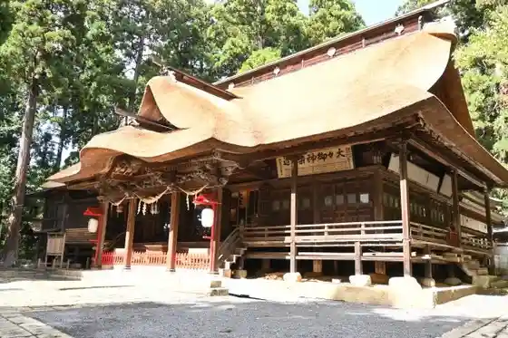
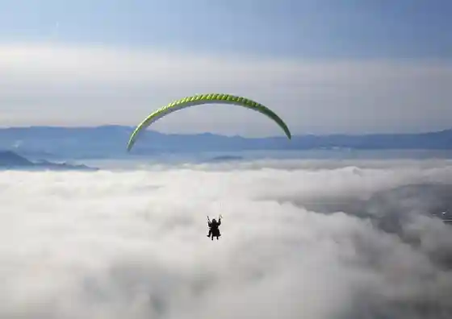
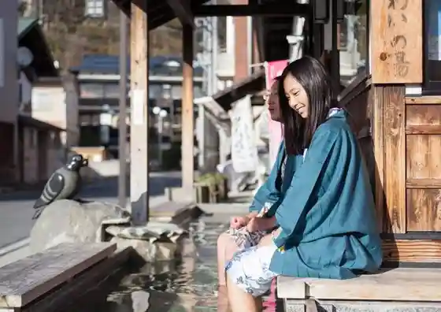
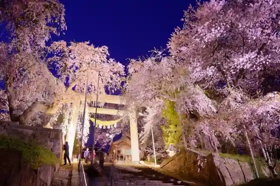

Kumano Taisha
Nanyo, Yamagata · 0238-47-7777 · Official / source link

Paraguraida Experience / Nanyo Sukai Park
Nanyo, Yamagata · 0238-40-2149 · Official / source link

Akayu Onsen
Nanyo, Yamagata · 0238-43-3114 · Official / source link

Eboshi Yama Park
Nanyo, Yamagata · 0238-40-2002 · Official / source link

Unkai De Yumei Na Jubun Hitoyama De no Kikyu Furaito Experience
Nanyo, Yamagata · 050-1722-1103 · Official / source link
Sudo Budo Sake Kojo
Nanyo, Yamagata · 0238-43-2578 · Official / source link
Akayu Onsen Yu Kotto
Nanyo, Yamagata · 0238-49-7350 · Official / source link
So Matsu Bara Sono
Nanyo, Yamagata · 0238-40-2002 · Official / source link
Kuguri Taki
Nanyo, Yamagata · 0238-40-8295 · Official / source link
Eboshi Yama Hachiman Shrine
Nanyo, Yamagata · 0238-43-2444 · Official / source link
Sakai Wainarii
Nanyo, Yamagata · 0238-43-2043 · Official / source link
Tsuru Nunoyama Chinzo Tera (Soto Shu) / Oitama Sanju San Kannon Dai 18 Ban Shinzan Kannon
Nanyo, Yamagata · Official / source link
Akayu Onsen Kanko Center Yunabikarakoro Kan
Nanyo, Yamagata · 0238-43-3114 · Official / source link
Mogitori Sono Sasaki (Hakuryu Sono Sasaki)
Nanyo, Yamagata · 0238-43-3493 · Official / source link
Akayu Eki Koryu Raunji
Nanyo, Yamagata · 0238-40-2002 · Official / source link
Shikin Sono Sudo Budo Sake
Nanyo, Yamagata · 0238-43-2578 · Official / source link
Tsuru no Ko
Nanyo, Yamagata · 080-2344-1459 · Official / source link
So Matsu Park
Nanyo, Yamagata · 0238-40-3211 · Official / source link
Yu Shinzan Higashi Sei Tera (Soto Shu) / Oitama Sanju San Kannon Dai 12 Ban Akayu Hijiri Kannon
Nanyo, Yamagata · Official / source link
Akayu Onsen Sakura Festival
Nanyo, Yamagata · 0238-40-2002 · Official / source link
Inari Mori Burial Mound (Kuni Shitei Historic Site)
Nanyo, Yamagata · 0238-40-3211 · Official / source link
Akayu Onsen Sakura Festival Raitoappu
Nanyo, Yamagata · 0238-40-2002 · Official / source link
Sato Kanko Budo Kari Sono
Nanyo, Yamagata · 0238-43-5959 · Official / source link
Yamabato Takushii
Nanyo, Yamagata · Official / source link
Hakuryu Mizumi
Nanyo, Yamagata · 0238-40-3211 · Official / source link
Ora Budo Sake
Nanyo, Yamagata · 0238-43-2056 · Official / source link
Haijia Park Nanyo
Nanyo, Yamagata · Official / source link
Yuki Toyotaro Memorial Museum
Nanyo, Yamagata · 0238-43-6802 · Official / source link
(Yama Matsu) Matsuda Kanko Orchard
Nanyo, Yamagata · 0238-43-2800 · Official / source link
Uesugi no O Yu Goten Shu
Nanyo, Yamagata · 0238-40-2611 · Official / source link
Yuzuru no Sato Museum
Nanyo, Yamagata · 0238-47-5800 · Official / source link
Sato Budo Sake
Nanyo, Yamagata · 0238-43-2201 · Official / source link
Shu Miyayama Hoshaku Bo (Shingonshu) / Oitama Sanju San Kannon Dai 30 Ban Hase Kannon
Nanyo, Yamagata · Official / source link
Eboshi Yama Haikingukosu (Eboshi Yama Park)
Nanyo, Yamagata · 0238-40-3211 · Official / source link
Urushiyama Orchard
Nanyo, Yamagata · 0238-43-3739 · Official / source link
Nichi Sho Yama Tsunamasa Tera (Soto Shu) / Oitama Sanju San Kannon Dai 28 Ban Miyazaki Kannon
Nanyo, Yamagata · Official / source link
Daimaru Farm
Nanyo, Yamagata · 0238-43-3594 · Official / source link
(Maru Ishi) Farm
Nanyo, Yamagata · 0238-49-8892 · Official / source link
Nanyo Guriinhiru
Nanyo, Yamagata · 0238-47-5835 · Official / source link
Miyauchi Takushii
Nanyo, Yamagata · Official / source link
Yakushiji (Nanyo)
Nanyo, Yamagata · 0238-43-3055 · Official / source link
Urushiyama Shinzan
Nanyo, Yamagata · 0238-47-2264 · Official / source link
Haguro Shrine (Nanyo)
Nanyo, Yamagata · 0238-40-3211 · Official / source link
Nashi Sato Shrine
Nanyo, Yamagata · 0238-45-2180 · Official / source link
Suzuki Sakurambo Sono (Suzuki Seika)
Nanyo, Yamagata · 0238-43-6214 · Official / source link
Ogi Kanko Warabi Sono
Nanyo, Yamagata · 080-5551-4743 · Official / source link
Imose no Matsu
Nanyo, Yamagata · 0238-40-3211 · Official / source link
Ni no Miya Jinja Honden
Nanyo, Yamagata · 0238-47-7777 · Official / source link
Suzuki Farm (Nanyo)
Nanyo, Yamagata · 0238-43-2919 · Official / source link
Otaki Warabi Sono
Nanyo, Yamagata · 080-6290-2078 · Official / source link
Tsuchi Sha Jinja Honden
Nanyo, Yamagata · 0238-47-7777 · Official / source link
(Maru En) Endo Farm
Nanyo, Yamagata · 0238-45-3440 · Official / source link
Matsuda Sakurambo Sono
Nanyo, Yamagata · 0238-43-7007 · Official / source link
Sudo Sakurambo Sono
Nanyo, Yamagata · 0238-47-5883 · Official / source link
Sakurayu Yama Gumi
Nanyo, Yamagata · 0238-43-3020 · Official / source link
Einin Ninen Magai Itabi
Nanyo, Yamagata · 0238-40-3211 · Official / source link
Shinonome Tera
Nanyo, Yamagata · 0238-43-2707 · Official / source link
Otaki (Nanyo)
Nanyo, Yamagata · Official / source link
Basho no Kuhi (Sazare Kaniashi Sha Hiagaru Shimizu Ya)
Nanyo, Yamagata · 0238-40-3211 · Official / source link
Shikama Orchard
Nanyo, Yamagata · 0238-43-3676 · Official / source link
Abe Farm
Nanyo, Yamagata · 0238-43-3514 · Official / source link
Nagasawa Farm
Nanyo, Yamagata · 0238-47-7527 · Official / source link
Nishoku Ne Burial Mound
Nanyo, Yamagata · 0238-40-3211 · Official / source link
Toda Farm
Nanyo, Yamagata · 0238-43-3961 · Official / source link
Ishida Farm
Nanyo, Yamagata · 0238-47-3623 · Official / source link
Karyaku Ninen Dainichi Itabi
Nanyo, Yamagata · 0238-40-3211 · Official / source link
Hakuryu Mizumi Deitan Keisei Shokubutsu Gunraku
Nanyo, Yamagata · 0238-40-3211 · Official / source link
Genko Sannen Amida Sanzon Itabi
Nanyo, Yamagata · 0238-40-3211 · Official / source link
Einin Kuchi Nen Magai Itabi
Nanyo, Yamagata · 0238-40-3211 · Official / source link
Nihei Farm
Nanyo, Yamagata · 0238-47-7336 · Official / source link
Mokuzo Kusurishi Nyorai Zazo
Nanyo, Yamagata · 0238-43-3055 · Official / source link
Fumikazu Sannen Amida Itabi
Nanyo, Yamagata · 0238-40-3211 · Official / source link
Masayoshi Gannen Dainichi Itabi
Nanyo, Yamagata · 0238-40-3211 · Official / source link
Shokyo Ninen Amida Itabi
Nanyo, Yamagata · 0238-40-3211 · Official / source link
Nanyo Tami Puru
Nanyo, Yamagata · 0238-49-2600 · Official / source link
Koshu Bath Towa Baths
Nanyo, Yamagata · Official / source link
Yuyado Masugata Ya
Nanyo, Yamagata · 0238-43-2301 · Official / source link
FactoryJaco
Nanyo, Yamagata · 080-5740-1517 · Official / source link
6DINING - Terasu Ruban Akayu
Nanyo, Yamagata · Official / source link
Basho no Kuhi (Nanyo Suwa Shrine)
Nanyo, Yamagata · 0238-40-3211 · Official / source link
Yamaki Sakurambo Sono
Nanyo, Yamagata · 0238-43-4586 · Official / source link